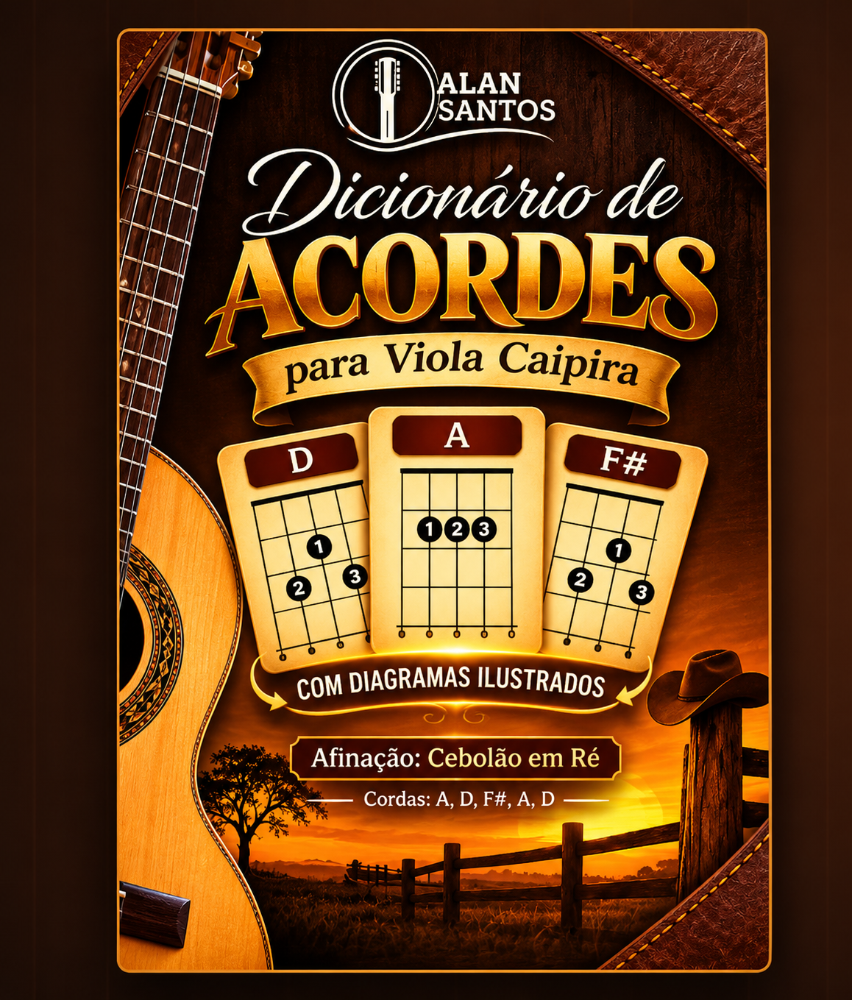

Material digital · Consulta prática
Seu dicionário de ACORDES para VIOLA CAIPIRA
Tenha diferentes posições de acordes sempre à mão para consultar enquanto estuda e pratica na afinação Cebolão em Ré.
Pagamento únicoR$ 9,90
QUERO MEU DICIONÁRIOMaterial digital em PDF · Sem envio físico
Para acompanhar seus estudos
Um guia de consulta para sua viola
🎼 Diferentes acordes
Consulte acordes maiores, menores, com sétima e outras variações.
📱 PDF digital
Um material de apoio para consultar no celular ou computador.
Informações do material
Feito para a afinação Cebolão em Ré
O dicionário apresenta diagramas de acordes organizados para consulta. É um complemento aos seus estudos de viola caipira, inclusive para alunos do curso Você no Ponteio.
- Formato: arquivo digital PDF
- Afinação: Cebolão em Ré
- Conteúdo: diagramas de acordes e variações
- Não inclui aulas em vídeo nem instrumento físico
Material de apoio
Adicione mais praticidade aos seus estudos
Receba o Dicionário de Acordes para Viola Caipira em formato digital.
R$ 9,90
COMPRAR AGORA